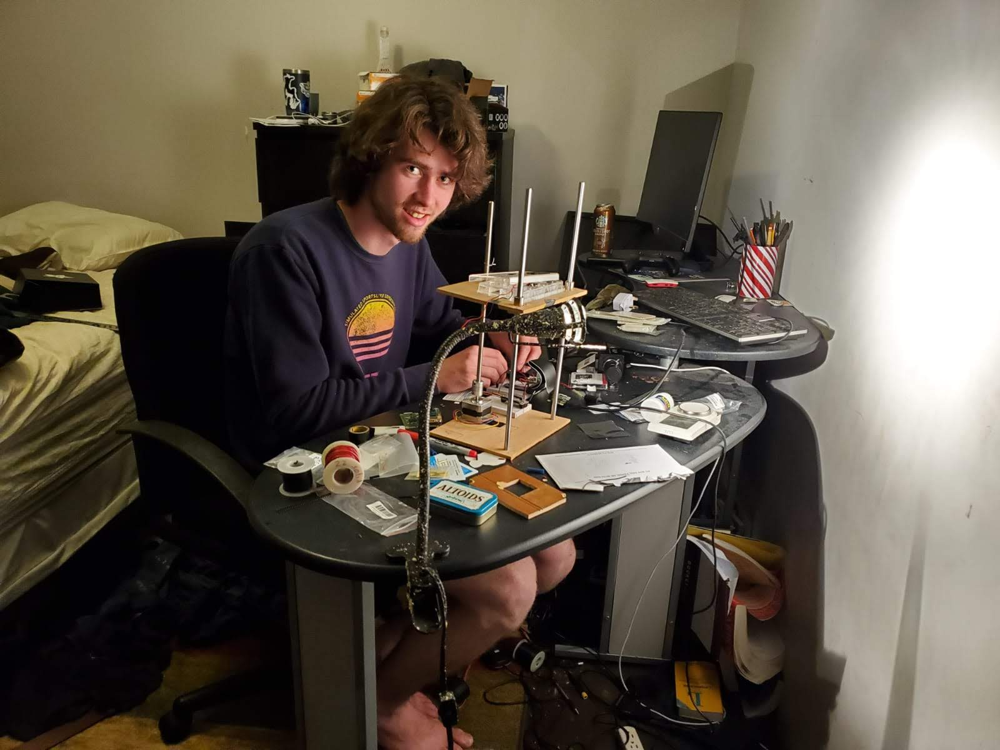

Background
I was born and raised in New York City. While in high school I had the opportunity to conduct research in the Costa Lab at the Icahn School of Medicine at Mount Sinai. Through this experience, I developed a deep interest in the fields of tissue engineering and cardiac regeneration. I have now moved my passions over to Dublin while I pursue a degree in Biomedical Engineering from Trinity College Dublin.
During term I work in the Monaghan Lab in the Trinity Biomedical Sciences Intstitute. While, during the summer I spend my time in the Costa Lab at Mt. Sinai.
Education
Trinity College Dublin, The University of DublinExpected: 2018-2023
BACCALAUREUS IN ARTE INGENIARIA (B.A.I) + MAGISTER IN ARTE INGENIARIA (M.A.I) IN BIOMEDICAL ENGINEERING
Recent Projects
Cardiac Tissue Engineering
Costa Lab, Icahn School of Medicine
Learn More
Cardiac Tissue Tracking System
A system designed to more efficiently record, track, and analyze contracting cardiac tissue strips.
DocsPublications
2019
Murphy, J. F., Mayourian, J., Stillitano, F., Munawar, S., Broughton, K. M., Agullo-Pascual, E., Sussman, M. A., Hajjar, R. J., Costa, K. D. & Turnbull, I. C. (2019).
Adult human cardiac stem cell supplementation effectively increases contractile function and maturation in human engineered cardiac tissues. Stem Cell Res Ther 10, 373.
[Abstract] Murphy, J. F., Mayourian, J., Stillitano, F., Munawar, S., Broughton, K. M., Sussman, M. A., Hajjar, R. J., Costa, K. D. & Turnbull, I. C. (2019). Cardiac Stem Cells from Failing Heart Improve Contractility of Engineered Human Myocardium. 2019 Biomedical Engineering Society Annual Meeting. Philadelphia, PA. October 16-19, 2019.
[Abstract] Salazar, S. I., Mayourian, J., Chionuna, H., Murphy, J. F., Costa, K. D. & Turnbull, I. C. (2019). Comparison of cell culturing conditions and extracellular vesicles preservation techniques to maximize cardioactive potency of the adult stem cell secretome. Extracellular Vesicles in Diagnostics and Therapeutics Symposium. New York Academy of the Sciences. February 19, 2019.
2018
[Abstract] Murphy, J. F., Mayourian, J., Salazar, S. I., Ceholski, D. K., Pothula, V. M., Stillitano, F., Dave, J., Broughton, K., Sussman, M., Hajjar, R. J., Costa, K. D. & Turnbull, I. C. (2018)
Adult Human Cardiac Progenitor Cells Enhance Contractile Force in Human Engineered Cardiac Tissues. AHA Scientific Sessions 2018. Nov 12, 2018.
[Abstract] Turnbull, I. C., Murphy, J. F., Mayourian, J., Salazar, S. I., Ceholski, D. K., Pothula, V., Stillitano, F., Broughton, K., Sussman, M., Hajjar, R. J. & Costa, K. D. (2018).
Heterocellular Coupling Mediates Pro-Contractile Effects Of Cardiac Progenitor Cells In Human Engineered Cardiac Tissue. International Society for Stem Cell Research June 2018: 52-53.
Turnbull, I. C., Mayourian, J., Murphy, J. F., Stillitano, F., Ceholski, D. K. & Costa, K. D. (2018). Cardiac Tissue Engineering Models of Inherited and Acquired Cardiomyopathies. Methods Mol Biol 1816: 145-159.
Mayourian, J., Ceholski, D. K., Gorski, P. A., Mathiyalagan, P., Murphy, J. F., Salazar, S. I., Stillitano, F., Hare, J. M., Sahoo, S., Hajjar, R. J. & Costa, K. D. (2018).
Exosomal microRNA-21-5p Mediates Mesenchymal Stem Cell Paracrine Effects on Human Cardiac Tissue Contractility. Circ Res 122(7): 933-944.